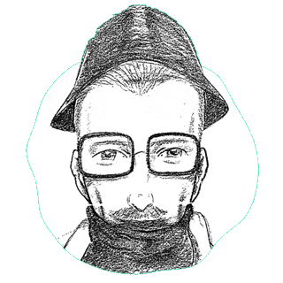
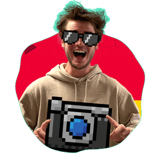
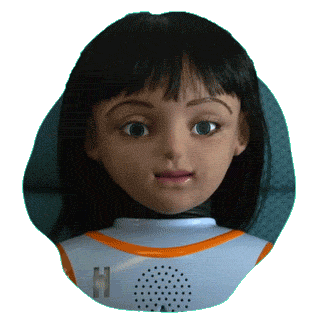
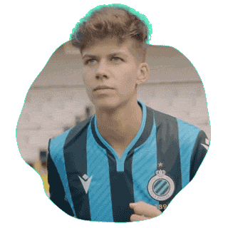
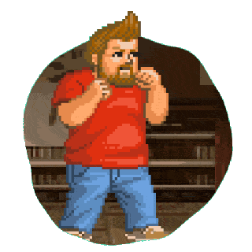
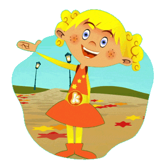
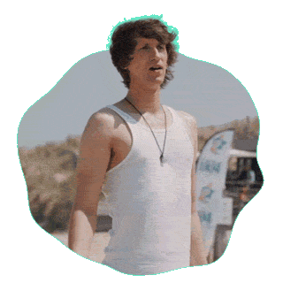
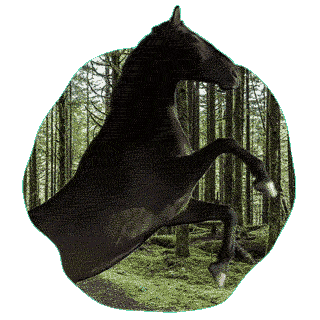

Gilles Vermeulen
creative developer

AI Witness Report
Concept, AI
AI Witness Report is a project in which I experiment with AI image generation tools such as Stable Diffusion. The project addresses the hypothetical question: "If a composite sketch was highly accurate... what would the real person actually look like?"
You can see the results on the AI Witness Report website or through the @ai.witness.support Instagram, TikTok, and YouTube accounts.
Concept & execution
Myself
Ketnet Fotofabriek
Development
Ketnet launched a new website and new apps, and they needed a new version of their popular Fotofabriek game to launch along with those.
This new version was made with HTML and javascript, which enabled easy integration into their various platforms. That's why you'll find Fotofabriek on the Ketnet website, but also in their Android and iOS apps.
The game also comes with an easy to use backoffice, built using Drupal.
Design
Kay AertsDevelopment
Myself
Comon Gent
Development
Comon wants to engage the people of Gent to make life just a little better. Through discussions and brainstorm sessions, they want to find out what the people of Gent find important, and how they can achieve these things together.
We created a Drupal website where they can share their challenges, stories and events, and where visitors can interact and have their voices heard.
Design
Kay AertsDevelopment
Bregt Vanbilsen & myself
Scooore Super League
Development
The Scooore Super League is a rebranding of the highest division of Belgian women's football. We developed the accompanying website in Drupal.
The website is fed with data from an external API.
Design
Kay AertsDevelopment
Bregt Vanbilsen & myself
Boeva the game
Concept, Design, Development, Animation
In cooperation with Ketnet, William Boeva created a TV show about video games, named "Boeva & the games". Ketnet asked us to develop a matching game, in which the player gets to experience a wide range of game types and gaming eras. The result is "Boeva the Game": an ode to video games, made in HTML5 and playable on many modern devices, from a desktop to your mobile phone.
Concept
Ketnet & myselfDesign
Kay Aerts & myselfDevelopment
Bregt Vanbilsen & myselfAnimation
Bregt Vanbilsen & myself
Ketnet's Kaatje
Development, Animation
Since 2011 I've been closely involved with the development of Kaatje's digital presence. During this trajectory, I've played an important role in building the fundamentals and a majority of the diverse games.
You can see Kaatje in action in your browser or on your tablet and smartphone, via the "Kaatje van Ketnet" app (Android, iOS) or the "Ketnet Jr" app (Android, iOS).
Concept
Ketnet, Pascal Vermeersch & Pure CommunicationDesign
Pascal VermeerschDevelopment
Bregt Vanbilsen & myselfAnimation
Bregt Vanbilsen & myselfHBvL
Staar Waars
Concept, Design, Development, Animation
In 2015, Disney introduced us to a new chapter in the Star Wars saga. In honor of this joyous occasion, "Het Belang van Limburg" wanted to create an interactive Star Wars experience with a local twist. The result is an interactive Darth Vader clone, who will say aloud anything you type.
I provided the design and creation of the 3D model, as well as the code, animations and the link with the external text-to-speech service.
Concept
Het Belang van Limburg & myselfDesign
Kay Aerts & myselfDevelopment
MyselfAnimation
Myself
Interactive Fiction
Concept, Design, Development
Ketnet wants to innovate and we're happy to help. For example when they wanted to create interactive fiction, as one of the first Belgian television companies. They came to use with a question: how do we turn our popular show "De Regel van 3S" into an interactive episode?
As an answer to that question, we developed a framework that allows them to absorb the viewer into the fiction. The viewer not only gets to decide the faith of the characters, but is also tested for their speed and agility if they want to bring the interactive segments to a good end. Try it for yourself in your browser or search for "Regel het voor Dries: de kunstroof" in the Ketnet app!
Because this was uncharted terrain for the show's producers, I guided them with the writing of the script and during the recording of some action sequences.
Concept
Ketnet, Bregt Vanbilsen & myselfDesign
Kay Aerts & myselfDevelopment
Myself
Philippaerts
Development, Animation
The Philippaerts family is internationally known for their impressive performances in the world of equestrian sports. Through subtle animations in the Drupal website that we created for them, we tried to capture the elegance of their magnificent horses.
Design
Kay AertsDevelopment
MyselfAnimations
Myself